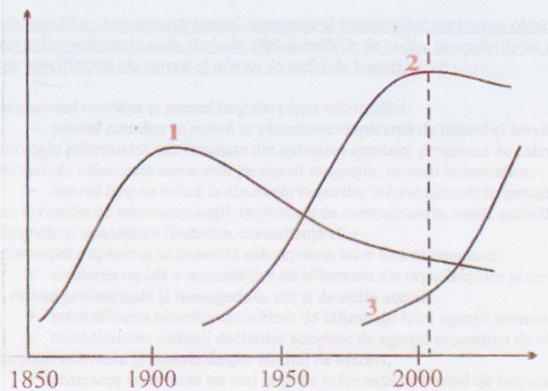
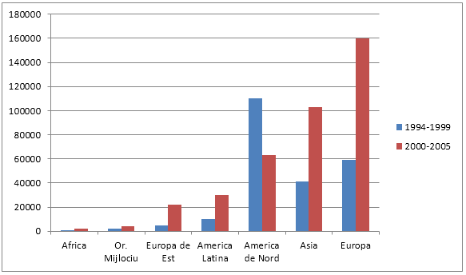
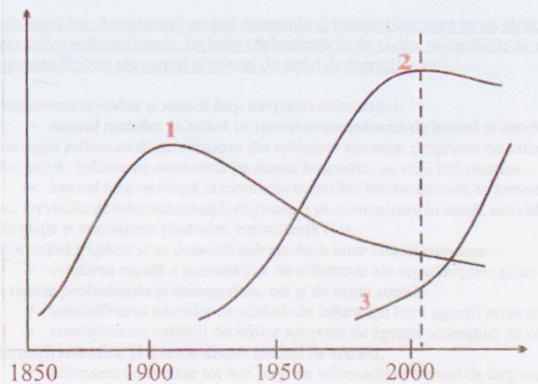
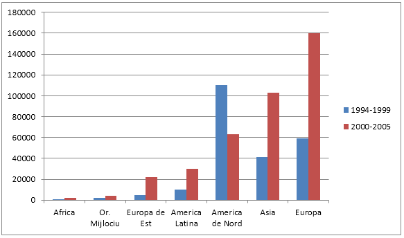

Grafice, tabele şi statistici
Graficul 1.
Revoluţiile industriale

Graficul 2
Evoluţia numărului de abonaţi la Internet

Sursa: Computer Industry Almanac, Octombrie 2005
Tabelul 1 și 2
Lanţul valorii adăugate pentru bunurile informaţionale tranzacţionate prin practice comerciale tradiţionale
Lanţul valorii adăugate pentru bunurile informaţionale tranzacţionate prin comerţ electronic
Statistici
Numărul de utilizatori web
Se estimează că 1,7 miliarde de oameni folosesc Internetul. În 2010 a însemnat aproximativ 25% din populaţia Terrei.
Dintre toate populaţiile lumii, următoarele procente din populaţie au acces la Internet:
Africa - 10,9 %
Asia - 21,5 %
Europa - 58,4 %
Orientul Mijlociu - 28,9 %
America de Nord - 77,4 %
America Latină - 34,5 %
Oceania şi Australia - 61,3 %
Tabel 3
Cele mai folosite echipamente hardware în lume:
Sursa: Gartner (aprilie 2009)
Numărul paginilor web din lume:
Aproximativ 250 de milioane.
Cele mai populare site-uri din întreaga lume:
Top 10 cele mai populare site-uri:
Tabel 4
Numărul de utilizatori internet din România:
Graficul 1.
Revoluţiile industriale

- Prima revoluţie industrială: cărbune, oţel, textile, maşina cu aburi.
- A doua revoluţie industrială: mecanică, automobile, avioane, petrol, chimie, electricitate.
- A treia revoluţie industrială: electronică, telematică, robotică, biotehnologie, atom.
Graficul 2
Evoluţia numărului de abonaţi la Internet

Sursa: Computer Industry Almanac, Octombrie 2005
Tabelul 1 și 2
Lanţul valorii adăugate pentru bunurile informaţionale tranzacţionate prin practice comerciale tradiţionale
| Programe informatice (”software”) | |||
| Publicaţii tipărite | |||
| Reclamă comercială |
Lanţul valorii adăugate pentru bunurile informaţionale tranzacţionate prin comerţ electronic
Statistici
Numărul de utilizatori web
Se estimează că 1,7 miliarde de oameni folosesc Internetul. În 2010 a însemnat aproximativ 25% din populaţia Terrei.
Dintre toate populaţiile lumii, următoarele procente din populaţie au acces la Internet:
Africa - 10,9 %
Asia - 21,5 %
Europa - 58,4 %
Orientul Mijlociu - 28,9 %
America de Nord - 77,4 %
America Latină - 34,5 %
Oceania şi Australia - 61,3 %
Tabel 3
Cele mai folosite echipamente hardware în lume:
| Companie | Transporturi trim. I '09 |
Cota pe piaţă trim. I '09 (%) |
Transporturi trim. I '08 |
Cota pe piaţă trim.I '08 (%) |
Creşterea trim. I '09 - trim. I '08 (%) |
| Hewlett-Packard | 13.305 | 19,8% | 12.974 | 18,1% | 2,6% |
| Dell Inc. | 8.789 | 13,1% | 10.579 | 14,7% | -16,9% |
| Acer | 8.758 | 13,0% | 6.911 | 9,6% | 26,7% |
| Lenovo | 4.430 | 6,6% | 4.798 | 6,7% | -7,7% |
| Toshiba | 3.688 | 5,5% | 3.115 | 4,3% | 18,4% |
| Altele | 28.239 | 42,0% | 33.467 | 46,6% | -15,6% |
| Total | 67.209 | 100,0% | 71.846 | 100,0% | -6,5% |
Numărul paginilor web din lume:
Aproximativ 250 de milioane.
Cele mai populare site-uri din întreaga lume:
Top 10 cele mai populare site-uri:
- YouTube
- Yahoo
- Windows Live
- Baidu
- Wikipedia
- Blogger
Tabel 4
Numărul de utilizatori internet din România:
| An | Număr de utilizatori | Populaţie | % Utilizatori din pop. | Sursa |
| 2000 | 799,648 | 222,128,139 | 3.6% | www.internetlivestats.com |
| 2004 | 3,236,748 | 21,578,318 | 15% | www.internetlivestats.com |
| 2006 | 5,229,394 | 21,205,977 | 24.7% | www.internetlivestats.com |
| 2007 | 5,937,257 | 20,979,708 | 28.3% | www.internetlivestats.com |
| 2010 | 8,105,326 | 20,298,838 | 39.9% | www.internetlivestats.com |
| 2012 | 9,150,744 | 19,944,954 | 45.9% | www.internetlivestats.com |
| 2014 | 10,627,560 | 19,651,554 | 54.1% | www.internetlivestats.com |
| 2016 | 11,236,186 | 19,372,734 | 58% | www.internetlivestats.com |